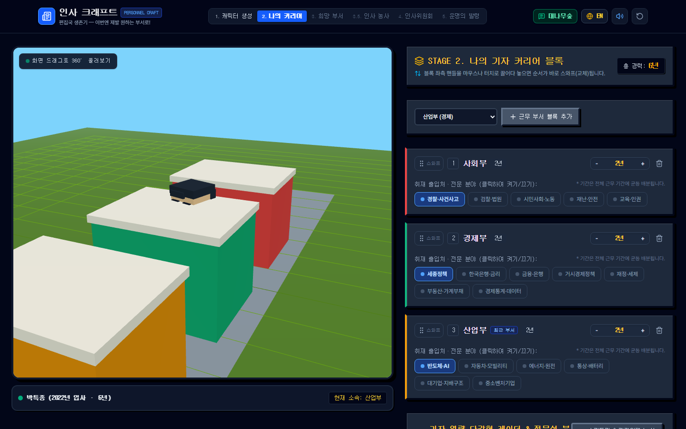
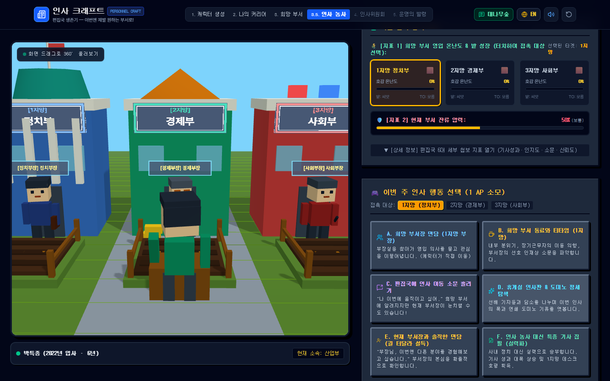
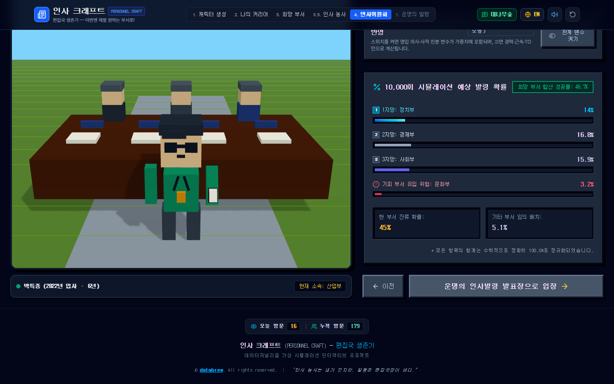
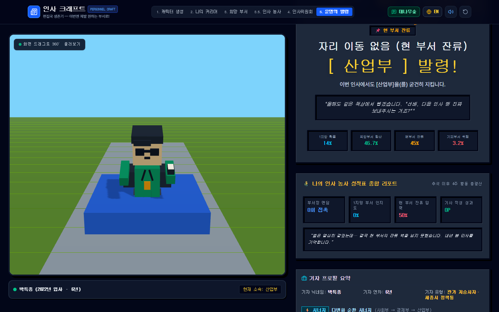

이런 게임입니다
신문사 기자는 몇 해마다 부서를 옮깁니다. 정치부에서 경제부로, 사회부에서 산업부로. 어디로 갈지는 내 의지만으로 정해지지 않습니다. 부서의 빈자리(TO), 오래 근무한 선배가 몇 명인지, 희망 부서장과의 관계, 같이 지원한 경쟁자, 그리고 지금 부서장이 나를 놓아줄지가 한꺼번에 얽힙니다.
인사 크래프트는 이 복잡한 인사판을 게임으로 옮겼습니다. 내 커리어를 블록으로 쌓고, 희망 부서를 정한 뒤, 추석 이후 4주 동안 부서장을 만나고 소문을 흘리며 인사 농사를 짓습니다. 마지막엔 1만 번의 시뮬레이션으로 계산한 발령 확률을 받아 들고 운명의 발표장에 들어섭니다.
모든 인물과 대사, 확률은 게임이 만든 가상의 값입니다. 실제 인물이나 특정 조직의 인사를 예측하지 않습니다. "인사 농사는 내가 짓지만, 발령은 편집국장이 낸다."
이렇게 진행됩니다
열정 신입형, 야근 베테랑형, 특종 탐사형 중 하나로 시작하거나 닉네임·소속 부서·입사 연도(0~24년차)·상반기/하반기 인사 시점을 직접 고릅니다. 머리 모양과 색, 셔츠·기자증 색, 안경까지 3D 블록 외형을 꾸미고 화면을 돌려 볼 수 있습니다.
거쳐 온 부서를 블록으로 쌓습니다. 끌어서 순서를 바꾸고, 근무 연수와 취재 출입처(한국은행·금리, 반도체·AI 등)를 정하면 기자 역량이 정치·정책부터 콘텐츠·편집까지 9각 레이더로 그려지고, 기자 유형과 종합 등급이 매겨집니다.
1~3지망과 절대 가고 싶지 않은 기피 부서 1곳을 정합니다. 각 부서의 TO, 장기근무자 수, 부서장과의 관계와 친밀도, 영입 의사 신호, 경쟁 기자 수, 지금 부서장의 방출 의사를 입력합니다. 모르면 모름으로 두면 불확실성으로 반영됩니다.
추석 연휴 이후 인사위원회까지 4주. 행동력(AP)을 써서 희망 부서장 면담, 동료와 티타임, 이동 소문 흘리기, 휴게실 정세 탐색, 현 부서장과의 솔직한 면담을 하거나 인사에 연연하지 않고 특종 기사를 씁니다. 행동할 때마다 발령 확률이 실시간으로 바뀝니다.
돌발 이벤트가 붙고, 부서장과의 친분·영입 의사 같은 관계 변수를 켜고 끌 수 있습니다. 1만 회 몬테카를로 시뮬레이션으로 1·2·3지망 성공률, 기피 부서로 밀려날 위험, 현 부서 잔류와 기타 배치 확률을 합계 100%로 보여 줍니다.
호외 형식의 발령장으로 결과를 확인합니다. 인사 농사 성적표와 커리어 시너지를 받아 보고, 익명 대나무숲 게시판에 소감을 남기며, 같은 조건으로 다시 뽑거나 결과 카드를 이미지로 저장하고 10년 기자 인생 모드에도 도전할 수 있습니다.
화면 미리보기

2. 나의 커리어 — 부서를 블록으로 쌓는다

3.5 인사 농사 — 누구를 만나고 어떤 수를 둘까

4. 인사위원회 — 1만 번의 시뮬레이션

5. 운명의 발령 — 호외와 성적표
발령 확률은 이렇게 계산합니다
점수와 가중치는 게임을 위해 정한 가상의 규칙이며 실제 언론사의 인사 기준이 아닙니다. 부서장 대사는 알고리즘이 자동으로 만든 가상 대사입니다.
기술 및 제작 방식
개발 현황
누구나 바로 해 볼 수 있습니다. 결과 카드는 이미지로 저장해 공유할 수 있습니다.